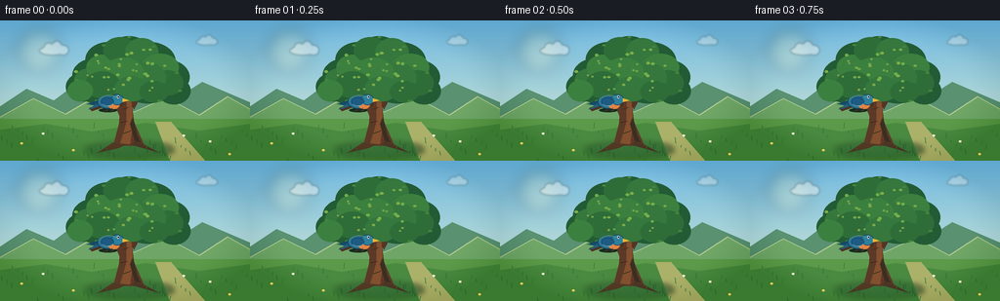
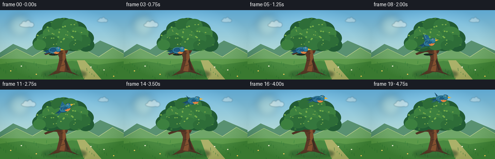
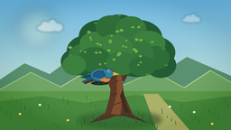
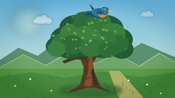

CODING AGENTS AS PIXEL WORLD MODELS
traex/GPT-5.6-Sol · dynamic_spatial_relationship_0050
点击播放 · 原生 RGB 像素
逐轮保存的候选
回放视频、检查图与代码变化。
每份候选均可单独播放。实际图片检查记录在下方工具轨迹中。
候选 01播放与检查图
点击播放 · 原生 RGB 像素


展开代码变化
--- 上一保存版本
+++ 本次保存版本
@@ -0,0 +1,279 @@
+"""Procedurally render a short, antialiased story of a bird flying above a tree."""
+
+from pathlib import Path
+import math
+
+import numpy as np
+from PIL import Image, ImageDraw, ImageFilter
+
+import artifact_io
+
+
+W, H, N = 256, 144, 20
+S = 3 # supersampling for clean small-scale shapes
+
+
+def sc(v):
+ return int(round(v * S))
+
+
+def box(coords):
+ return tuple(sc(v) for v in coords)
+
+
+def pts(coords):
+ return [(sc(x), sc(y)) for x, y in coords]
+
+
+def smoothstep(x):
+ x = max(0.0, min(1.0, x))
+ return x * x * (3.0 - 2.0 * x)
+
+
+def draw_cloud(layer, cx, cy, scale, alpha=165):
+ d = ImageDraw.Draw(layer, "RGBA")
+ c = (255, 255, 248, alpha)
+ d.ellipse(box((cx - 19*scale, cy - 6*scale, cx + 18*scale, cy + 6*scale)), fill=c)
+ d.ellipse(box((cx - 13*scale, cy - 11*scale, cx + 1*scale, cy + 5*scale)), fill=c)
+ d.ellipse(box((cx - 2*scale, cy - 14*scale, cx + 13*scale, cy + 5*scale)), fill=c)
+ d.ellipse(box((cx + 7*scale, cy - 8*scale, cx + 22*scale, cy + 6*scale)), fill=c)
+
+
+def background(frame):
+ # Painted vertical sky gradient.
+ y = np.linspace(0, 1, H*S, dtype=np.float32)[:, None, None]
+ top = np.array([111, 184, 225], dtype=np.float32)[None, None, :]
+ bottom = np.array([224, 239, 209], dtype=np.float32)[None, None, :]
+ arr = np.broadcast_to(top*(1-y) + bottom*y, (H*S, W*S, 3)).copy().astype(np.uint8)
+ im = Image.fromarray(arr, "RGB")
+
+ # Warm sun haze and gently drifting clouds.
+ haze = Image.new("RGBA", im.size, (0, 0, 0, 0))
+ hd = ImageDraw.Draw(haze, "RGBA")
+ hd.ellipse(box((17, 8, 63, 54)), fill=(255, 242, 177, 38))
+ hd.ellipse(box((27, 18, 53, 44)), fill=(255, 248, 205, 62))
+ haze = haze.filter(ImageFilter.GaussianBlur(sc(7)))
+ im = Image.alpha_composite(im.convert("RGBA"), haze)
+
+ clouds = Image.new("RGBA", im.size, (0, 0, 0, 0))
+ drift = frame * 0.34
+ draw_cloud(clouds, 54 + drift, 31, 0.72, 105)
+ draw_cloud(clouds, 211 + drift*0.45, 22, 0.52, 88)
+ clouds = clouds.filter(ImageFilter.GaussianBlur(sc(1.0)))
+ im = Image.alpha_composite(im, clouds)
+
+ d = ImageDraw.Draw(im, "RGBA")
+ # Distant rolling hills, deliberately quiet so the main relation reads clearly.
+ d.polygon(pts([(0, 88), (27, 70), (55, 82), (82, 62), (112, 82),
+ (144, 67), (177, 82), (207, 63), (256, 84), (256, 144), (0, 144)]),
+ fill=(89, 145, 113, 255))
+ d.polygon(pts([(0, 99), (34, 80), (67, 96), (103, 75), (137, 94),
+ (170, 79), (204, 97), (233, 78), (256, 91), (256, 144), (0, 144)]),
+ fill=(111, 166, 104, 255))
+ # Light atmospheric ridgeline.
+ d.line(pts([(0, 99), (34, 80), (67, 96), (103, 75), (137, 94),
+ (170, 79), (204, 97), (233, 78), (256, 91)]), fill=(184, 205, 143, 150), width=sc(1))
+
+ # Meadow bands and a soft foreground path.
+ d.rectangle(box((0, 101, 256, 144)), fill=(92, 154, 74, 255))
+ d.polygon(pts([(0, 112), (47, 106), (94, 114), (149, 105), (204, 113), (256, 106),
+ (256, 144), (0, 144)]), fill=(73, 137, 64, 255))
+ d.polygon(pts([(174, 144), (210, 144), (175, 104), (159, 104)]), fill=(171, 177, 105, 105))
+
+ # Fine grasses and tiny flowers add scale without visual clutter.
+ for i in range(52):
+ x = (i * 47 + 13) % 256
+ base = 110 + ((i * 29) % 35)
+ length = 2 + (i % 5)
+ lean = ((i % 3) - 1) * 0.8
+ col = (49, 112 + (i % 3)*8, 56, 170)
+ d.line(pts([(x, base), (x + lean, base - length)]), fill=col, width=sc(0.55))
+ for x, y, c in [(22,126,(255,219,107,220)), (44,116,(245,244,221,210)),
+ (75,133,(250,211,99,210)), (215,124,(244,240,205,205)),
+ (235,137,(255,210,92,220)), (188,118,(249,235,214,190))]:
+ d.ellipse(box((x-1.2, y-1.1, x+1.2, y+1.1)), fill=c)
+ return im
+
+
+def draw_tree(im, frame):
+ d = ImageDraw.Draw(im, "RGBA")
+ sway = math.sin(frame * 0.34) * 0.65
+
+ # Ground shadow anchors the tree.
+ shadow = Image.new("RGBA", im.size, (0, 0, 0, 0))
+ sd = ImageDraw.Draw(shadow, "RGBA")
+ sd.ellipse(box((87, 124, 178, 141)), fill=(31, 75, 44, 88))
+ shadow = shadow.filter(ImageFilter.GaussianBlur(sc(2.8)))
+ im.alpha_composite(shadow)
+
+ # Trunk and branches. Broad silhouette first, then warm lit facets.
+ d.polygon(pts([(116, 128), (122, 105), (123, 79), (116, 58), (127, 57),
+ (134, 78), (137, 104), (148, 129)]), fill=(91, 57, 38, 255))
+ d.polygon(pts([(124, 102), (116, 83), (94, 75), (96, 70), (120, 78), (129, 91)]),
+ fill=(91, 57, 38, 255))
+ # The low branch is a readable perch behind the bird in the opening shot.
+ d.polygon(pts([(126, 88), (111, 87), (94, 93), (91, 90), (108, 82), (127, 81)]),
+ fill=(78, 50, 34, 255))
+ d.polygon(pts([(131, 81), (144, 62), (165, 54), (166, 59), (149, 69), (137, 91)]),
+ fill=(86, 53, 35, 255))
+ d.polygon(pts([(127, 63), (132, 41), (137, 39), (136, 68)]), fill=(83, 50, 33, 255))
+ # Trunk highlights and bark cuts.
+ d.polygon(pts([(126, 62), (130, 78), (129, 106), (123, 126), (133, 127),
+ (136, 104), (134, 78), (131, 62)]), fill=(130, 80, 47, 190))
+ d.polygon(pts([(136, 99), (140, 117), (145, 127), (139, 127), (133, 106)]), fill=(61, 45, 32, 130))
+ for seg in [((123,105),(130,103)), ((126,116),(134,113)), ((126,91),(131,89)),
+ ((121,76),(127,77)), ((136,69),(142,66))]:
+ d.line(pts(seg), fill=(55, 42, 31, 145), width=sc(1))
+
+ # Layered foliage clusters: back dark mass, midtone blobs, tiny highlights.
+ clusters = [
+ (96,56,22,17), (111,40,24,18), (132,35,23,19), (153,42,27,20),
+ (170,58,24,18), (151,66,27,19), (126,62,28,21), (103,69,24,17),
+ (86,68,19,15), (178,72,17,14), (142,51,26,20), (114,54,25,20)
+ ]
+ # Back crown outline.
+ for idx, (cx, cy, rx, ry) in enumerate(clusters):
+ dx = sway * (0.4 + cy/90) + math.sin(idx*1.7 + frame*.19)*0.25
+ d.ellipse(box((cx-rx+dx, cy-ry, cx+rx+dx, cy+ry)), fill=(34, 91, 52, 255))
+ # Front overlapping lobes.
+ fronts = [
+ (91,61,15,12), (105,48,17,13), (123,30,17,13), (145,32,17,14),
+ (164,48,19,14), (172,64,16,13), (150,59,20,16), (126,54,21,16),
+ (105,66,18,14), (134,70,17,13), (82,72,13,11), (158,73,15,11)
+ ]
+ for idx, (cx, cy, rx, ry) in enumerate(fronts):
+ dx = sway + math.sin(idx*2.2 + frame*.21)*0.28
+ color = [(53,119,61,255), (60,128,63,255), (46,109,56,255)][idx % 3]
+ d.ellipse(box((cx-rx+dx, cy-ry, cx+rx+dx, cy+ry)), fill=color)
+ # Sun-catching leaf dabs, mostly upper-left.
+ for i in range(34):
+ a = i * 2.399
+ rad = 8 + (i * 11 % 38)
+ cx = 127 + math.cos(a) * rad * 1.15 + sway
+ cy = 51 + math.sin(a) * rad * 0.55
+ if 71 < cx < 184 and 19 < cy < 80:
+ r = 1.2 + (i % 3)*0.35
+ col = (111 + (i%2)*14, 165 + (i%3)*5, 74, 185)
+ d.ellipse(box((cx-r, cy-r*.7, cx+r, cy+r*.7)), fill=col)
+ # A few explicitly shaped leaves on the crown edge.
+ for i, (x, y) in enumerate([(78,61),(91,44),(106,25),(132,17),(157,27),(181,54),(184,72),(163,82),(99,82)]):
+ ang = math.sin(i + frame*.18) * 1.4
+ d.ellipse(box((x-2+sway, y-1+ang*.2, x+2+sway, y+1+ang*.2)), fill=(67,132,59,225))
+
+ # Roots and nearby foreground grass overlap the base naturally.
+ d.polygon(pts([(116,125),(99,136),(121,131),(130,127)]), fill=(82,57,37,230))
+ d.polygon(pts([(141,124),(164,136),(143,130),(133,127)]), fill=(76,54,37,225))
+ for x, h in [(104,8),(110,5),(151,7),(158,9),(167,6),(94,5)]:
+ d.line(pts([(x,136),(x-1,136-h)]), fill=(39,101,47,230), width=sc(1))
+
+
+def bird_sprite(wing_phase, flying, angle):
+ """Return a richly colored bluebird sprite, facing right."""
+ sw, sh = sc(48), sc(40)
+ lay = Image.new("RGBA", (sw, sh), (0, 0, 0, 0))
+ d = ImageDraw.Draw(lay, "RGBA")
+ X = lambda v: sc(v)
+
+ # Tail behind body.
+ d.polygon(pts([(16,23), (3,27), (15,29), (20,25)]), fill=(22,72,105,255))
+ d.polygon(pts([(15,25), (5,33), (20,28)]), fill=(35,93,123,255))
+
+ # Animated far wing, then body. During flight wing_phase ranges roughly -1..1.
+ if flying:
+ tip_y = 20 - wing_phase * 14
+ far_tip_y = 22 + wing_phase * 10
+ d.polygon(pts([(22,22), (13,far_tip_y), (20,29), (29,24)]), fill=(21,73,103,230))
+ d.polygon(pts([(23,22), (20,tip_y), (27,9 if wing_phase > 0 else 31), (31,24)]),
+ fill=(35,104,145,255))
+ d.line(pts([(23,22),(20,tip_y)]), fill=(154,207,213,175), width=X(.7))
+ # Main body.
+ d.ellipse(box((14,18,37,32)), fill=(42,116,151,255), outline=(18,63,86,255), width=X(1))
+ # Peach breast makes the silhouette and facing direction immediately legible.
+ d.ellipse(box((25,23,37,32)), fill=(225,133,68,255))
+ d.ellipse(box((28,17,41,28)), fill=(46,127,158,255), outline=(18,63,86,255), width=X(.8))
+ d.ellipse(box((34.2,18.4,36.7,20.9)), fill=(250,247,220,255))
+ d.ellipse(box((35,19,36.3,20.3)), fill=(16,24,25,255))
+ d.polygon(pts([(40,21), (47,23.5), (40,25)]), fill=(237,177,52,255))
+
+ # Foreground wing is folded while perched and beating when aloft.
+ if flying:
+ tip_y = 20 - wing_phase * 15
+ outer_x = 17 if wing_phase > 0 else 10
+ d.polygon(pts([(24,22), (outer_x,tip_y), (19,26), (29,28), (33,24)]),
+ fill=(29,91,132,255), outline=(17,62,89,230))
+ d.line(pts([(23,23),(19,26),(29,27)]), fill=(111,173,185,190), width=X(.7))
+ else:
+ d.ellipse(box((18,20,31,29)), fill=(29,91,132,255), outline=(17,62,89,220), width=X(.8))
+ d.arc(box((18,20,31,29)), 25, 145, fill=(126,185,192,190), width=X(.8))
+
+ # Back highlight and tiny feet for the opening perch.
+ d.arc(box((15,18,37,31)), 190, 315, fill=(122,186,197,165), width=X(.8))
+ if not flying:
+ d.line(pts([(25,31),(24,34),(21.5,34)]), fill=(77,56,37,255), width=X(.8))
+ d.line(pts([(29,31),(30,34),(27.5,34)]), fill=(77,56,37,255), width=X(.8))
+
+ if abs(angle) > 0.01:
+ lay = lay.rotate(angle, resample=Image.Resampling.BICUBIC, expand=True)
+ return lay
+
+
+def bird_state(frame):
+ # Six-frame readable hold in front of the trunk, a long continuous climb,
+ # then a small hover clearly above the crown.
+ if frame <= 5:
+ x = 111 + math.sin(frame*0.8)*0.25
+ y = 82 - (0.4 if frame == 5 else 0)
+ flying = frame == 5
+ angle = 0
+ phase = -0.25
+ elif frame <= 16:
+ u = smoothstep((frame - 5) / 11.0)
+ x = 111 + 34*u + 2.0*math.sin(math.pi*u)
+ y = 82 - 64*u - 5.0*math.sin(math.pi*u)
+ flying = True
+ angle = 24 * math.sin(math.pi*u) # PIL positive is counter-clockwise visually
+ phase = math.sin((frame - 5) * math.pi * 0.82)
+ else:
+ x = 145 + math.sin((frame-16)*1.5)*0.7
+ y = 18 + math.sin((frame-16)*1.8)*0.7
+ flying = True
+ angle = 2.0
+ phase = math.sin((frame - 5) * math.pi * 0.82)
+ return x, y, flying, angle, phase
+
+
+def render(frame):
+ im = background(frame)
+ draw_tree(im, frame)
+
+ x, y, flying, angle, phase = bird_state(frame)
+ # A faint launch shadow on the perch/ground helps establish initial depth.
+ if frame < 9:
+ d = ImageDraw.Draw(im, "RGBA")
+ alpha = int(45 * (1 - frame/10))
+ d.ellipse(box((x-10, 90, x+9, 94)), fill=(25,42,32,alpha))
+
+ sprite = bird_sprite(phase, flying, angle)
+ # Sprite's visual body center is around (26,24), position state refers to that center.
+ px = sc(x) - int(sprite.width * 0.54)
+ py = sc(y) - int(sprite.height * 0.59)
+ im.alpha_composite(sprite, (px, py))
+
+ # Soft cinematic edge shading, extremely restrained.
+ yy, xx = np.mgrid[0:H*S, 0:W*S]
+ nx = (xx - W*S/2)/(W*S/2)
+ ny = (yy - H*S/2)/(H*S/2)
+ vignette = np.clip((nx*nx + ny*ny - .55)*26, 0, 16).astype(np.uint8)
+ rgb = np.asarray(im.convert("RGB"), dtype=np.int16)
+ rgb = np.clip(rgb - vignette[...,None], 0, 255).astype(np.uint8)
+ out = Image.fromarray(rgb, "RGB").resize((W,H), Image.Resampling.LANCZOS)
+ return np.asarray(out, dtype=np.uint8)
+
+
+def main():
+ frames = np.stack([render(i) for i in range(N)], axis=0)
+ artifact_io.save(frames, Path(__file__).resolve().parent)
+
+
+if __name__ == "__main__":
+ main()
可观测工具轨迹
实际执行的命令与返回图片。
命令 1exit 0
/bin/bash -lc "ls -la && printf '\\n--- prompt.txt ---\\n' && cat prompt.txt && printf '\\n--- GENERATION_RULES.md ---\\n' && cat GENERATION_RULES.md && printf '\\n--- task_spec.json ---\\n' && cat task_spec.json"
命令 2exit 0
/bin/bash -lc "sed -n '1,240p' artifact_io.py"
命令 3exit 0
/bin/bash -lc 'python generate.py'
命令 4exit 0
/bin/bash -lc "python - <<'PY'
import numpy as np
z=np.load('pixels.npz')['pixels']
print(z.shape,z.dtype,hex(int(z.min())),hex(int(z.max())))
from PIL import Image
for i in range(20):
im=Image.open(f'frames/{i:02d}.png')
assert im.mode=='RGB' and im.size==(256,144)
print('20 RGB frames OK')
PY
ls -lh pixels.npz inspection.png index.html frames/00.png frames/19.png"视觉工具实际返回图片 1

视觉工具实际返回图片 2

视觉工具实际返回图片 3

保存候选 1 份；完成命令 4 次；可验证图片返回 3 张。原始 API 响应与完整日志保留在本地。